1Dari Menghitung ke Merancang
Setiap kelas ingin menghitung iuran karyawisatanya. Masa kita menghitung dari awal terus-terusan? Bayangkan kamu menulis resep, bukan memasak sepiring nasi goreng. Resep itulah algoritma.
Tebak dulu! Rombongan 40 orang, satu bus muat 12 orang. Berapa bus yang dibutuhkan?
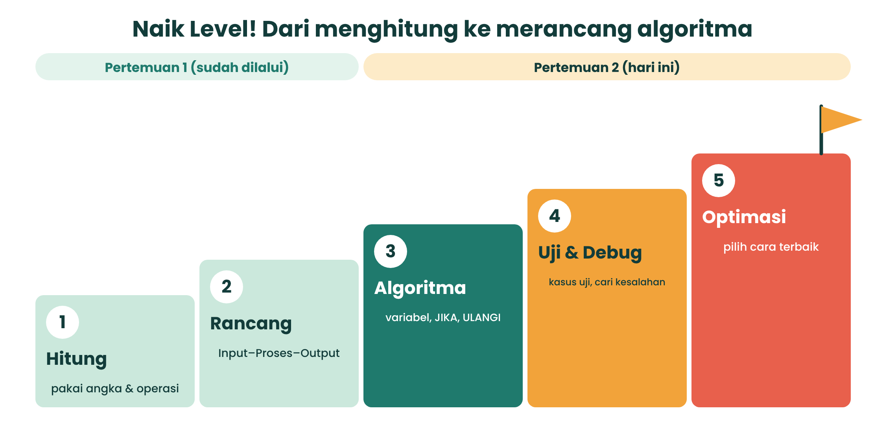
2Variabel: Kotak Bernama
Variabel adalah kotak yang punya nama dan isinya bisa diganti. Tanda ← dibaca “diisi dengan”. Jadi bus ← bus + 1 artinya: ambil isi lama, tambah 1, simpan lagi.
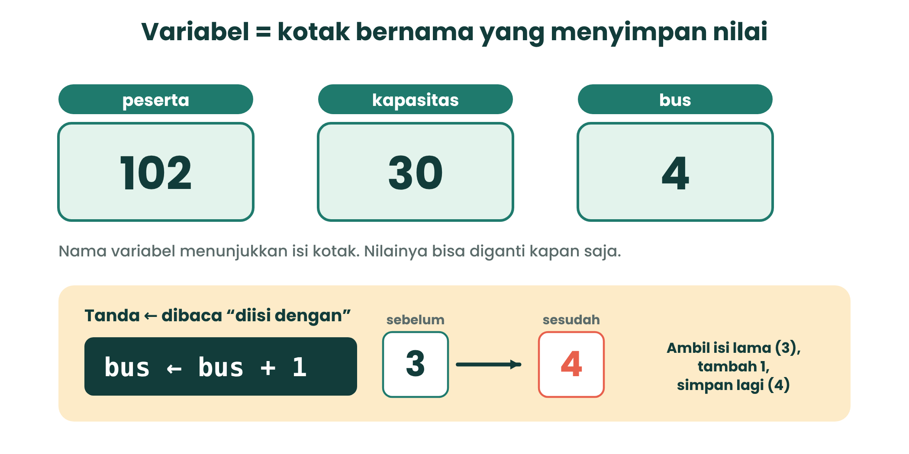
Coba sendiri: bus ← bus + 1
Isi kotak bus sekarang: 3
3DIV dan MOD
DIV = hasil bagi bulat (berapa kali muat penuh). MOD = sisa bagi. Contoh: 40 DIV 12 = 3, 40 MOD 12 = 4, sebab 40 = 3 × 12 + 4.
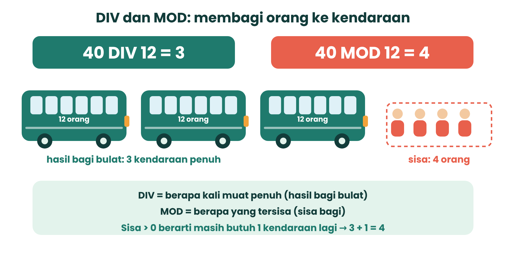
Kalkulator DIV dan MOD
JIKA peserta MOD kapasitas > 0 MAKA bus ← bus + 1
KUDA Cocokkan istilah
4Percabangan: Memilih Jalan
Percabangan memakai JIKA … MAKA … JIKA TIDAK …. Di flowchart, pertanyaan ditulis di belah ketupat dengan dua jalan: Ya dan Tidak.
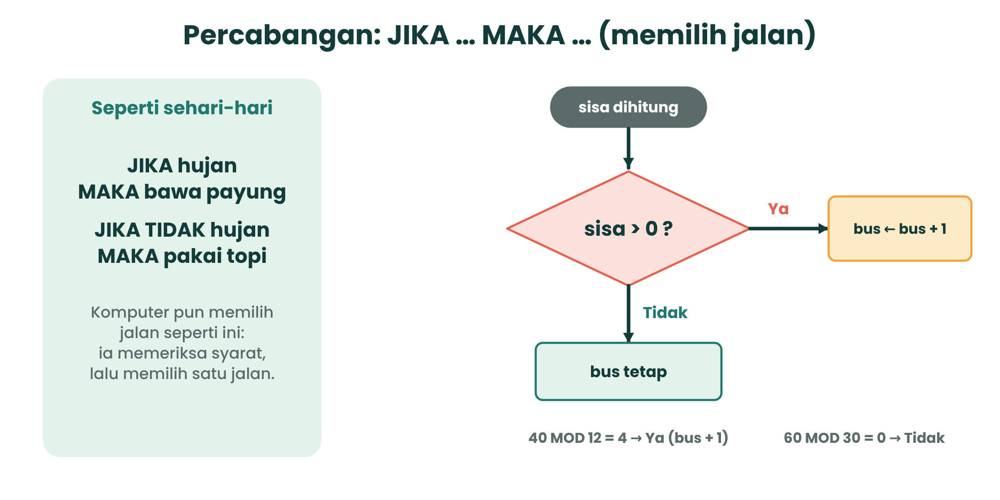
5Perulangan: Ulangi Sampai Cukup
ULANGI n kali dipakai jika jumlah putaran pasti. SELAMA syarat mengulang saat syarat benar dan berhenti saat salah.
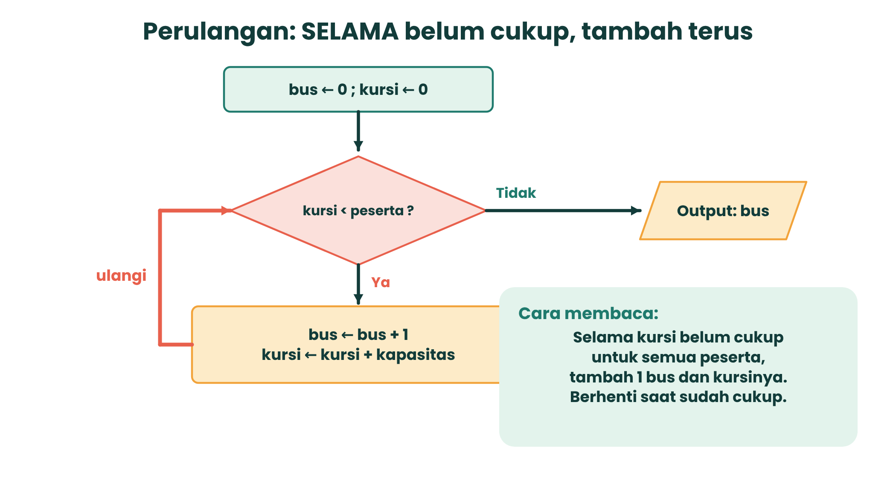
Jalankan perulangan langkah demi langkah
1 bus ← 0 2 kursi ← 0 3 SELAMA kursi < peserta 4 bus ← bus + 1 5 kursi ← kursi + kapasitas 6 TAMPILKAN bus
| Putaran | bus | kursi | kursi < peserta ? |
|---|
6Flowchart: Resep Bergambar
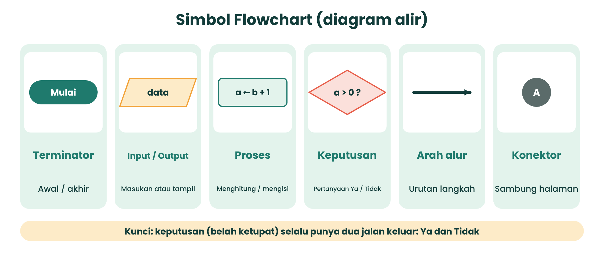
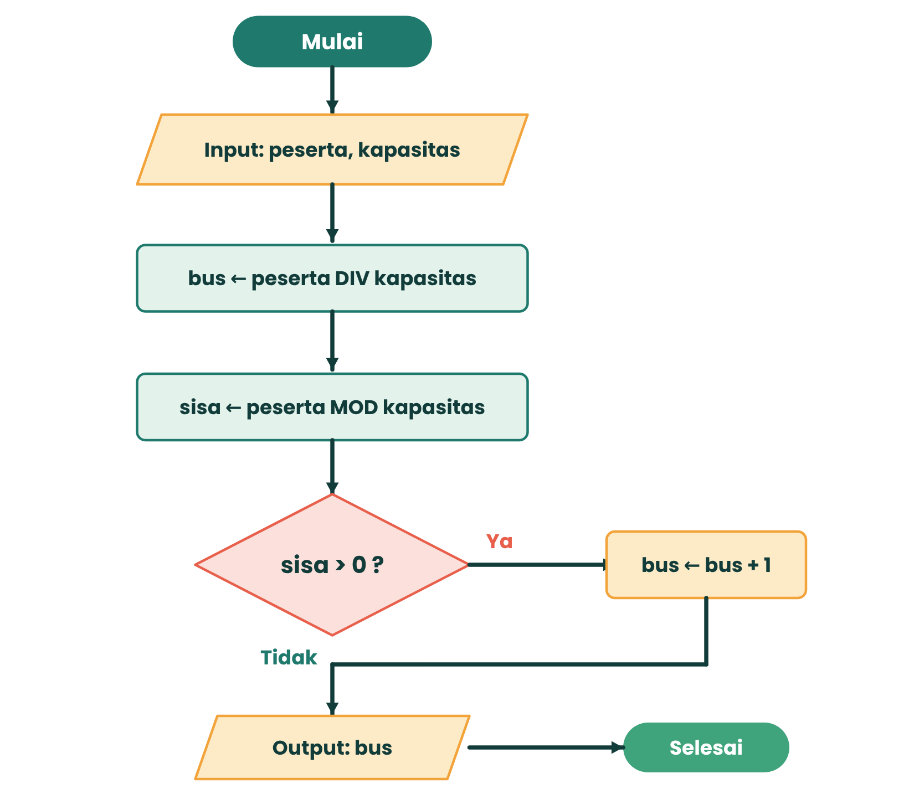
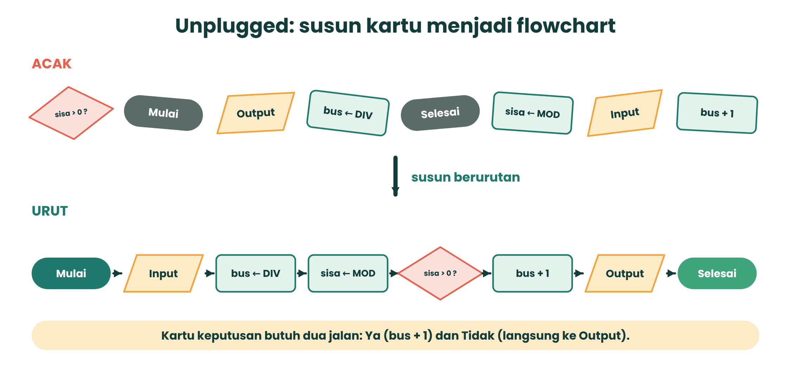
7Tabel Penelusuran
Sebelum percaya pada sebuah algoritma, jalankan dulu dengan pensil. Catat nilai variabel di setiap langkah. Itu namanya tabel penelusuran (trace table). Jangan menebak!
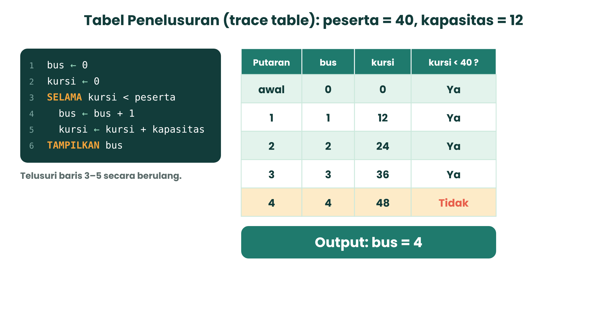
Counter: hitung suara menu
Klik suara satu per satu (A = ayam, I = ikan, T = telur). Perulangan membaca suara, percabangan menambah penghitung yang sesuai.
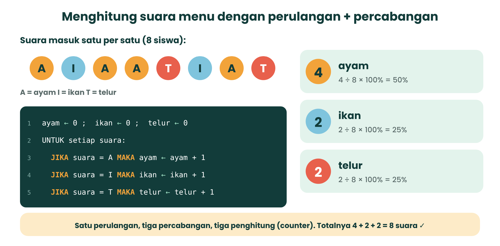
8Uji dan Cari Bug
Bug adalah kesalahan dalam algoritma. Cara menemukannya: uji dengan banyak kasus. Satu kasus saja bisa menipu!
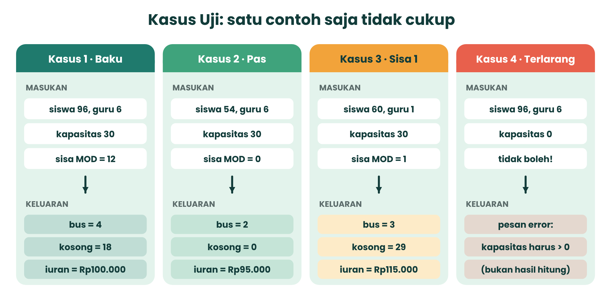
Simulator Kalkulator Iuran
Pilih kasus uji (atau isi sendiri), lalu pilih versi algoritma. Lihat apakah bug-nya ketahuan.
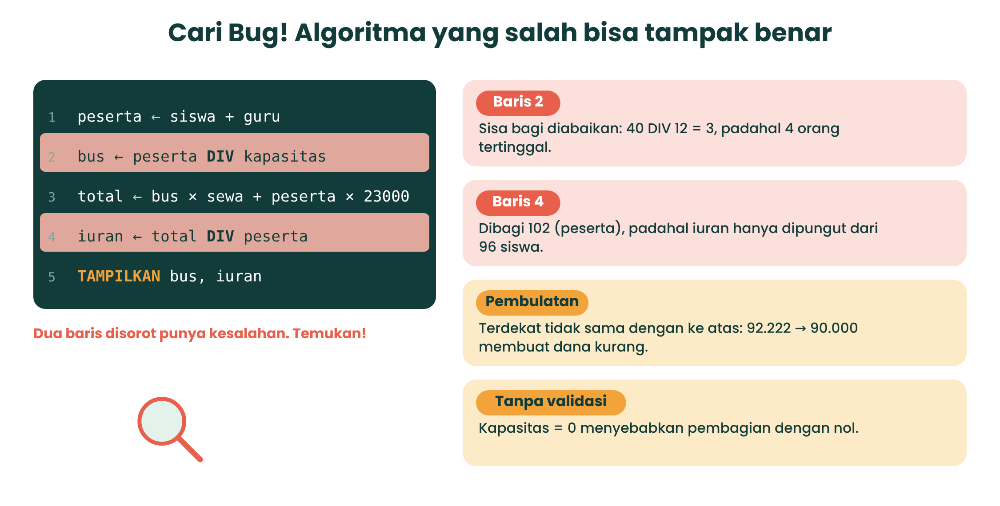
9Dua Cara, Mana Lebih Baik?
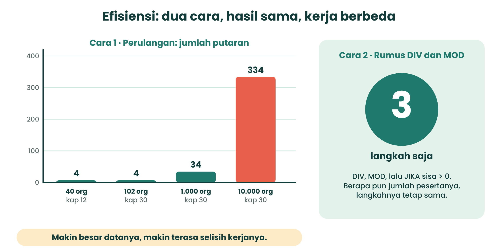
Hitung putaran vs langkah
10Tantangan Platinum: Kombinasi Termurah
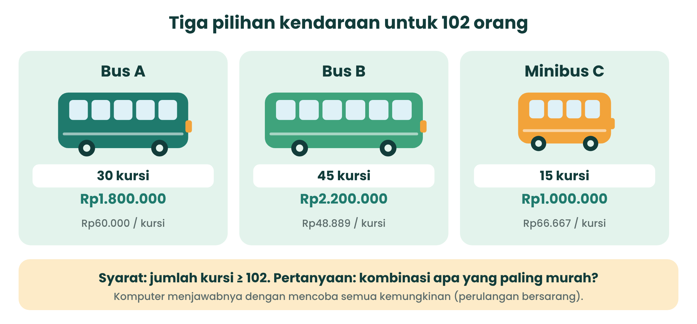
Komputer mencoba semua kombinasi
| Kombinasi | Kursi | Biaya sewa | Kosong |
|---|
Algoritma: untuk a dari 0 sampai 4, untuk b dari 0 sampai 4, untuk c dari 0 sampai 4 (125 kombinasi). Simpan yang kursinya cukup dan biayanya terendah.
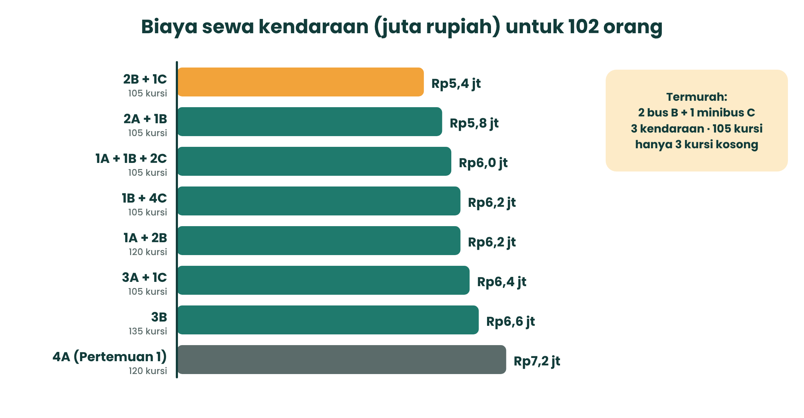
11Proyek Kelompok
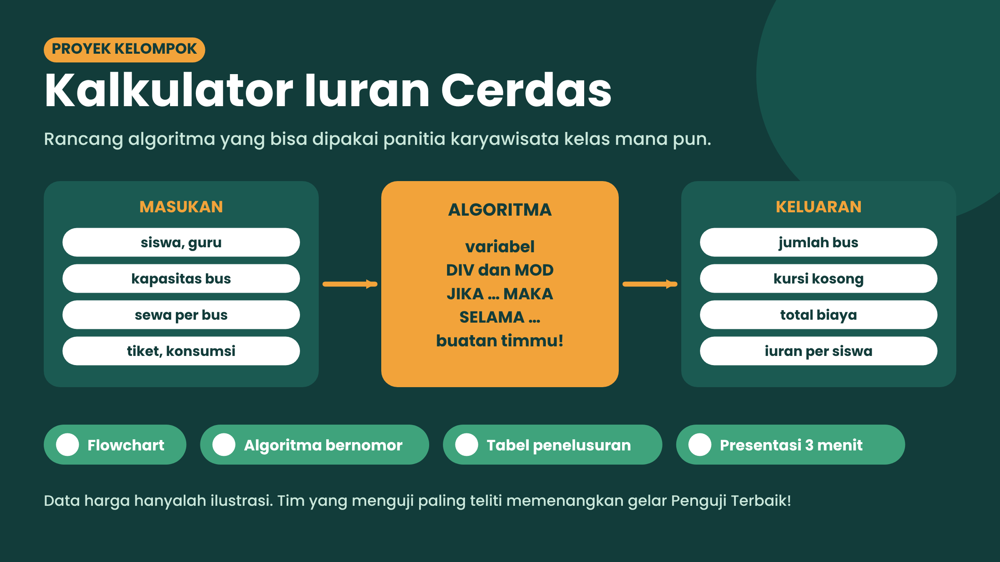
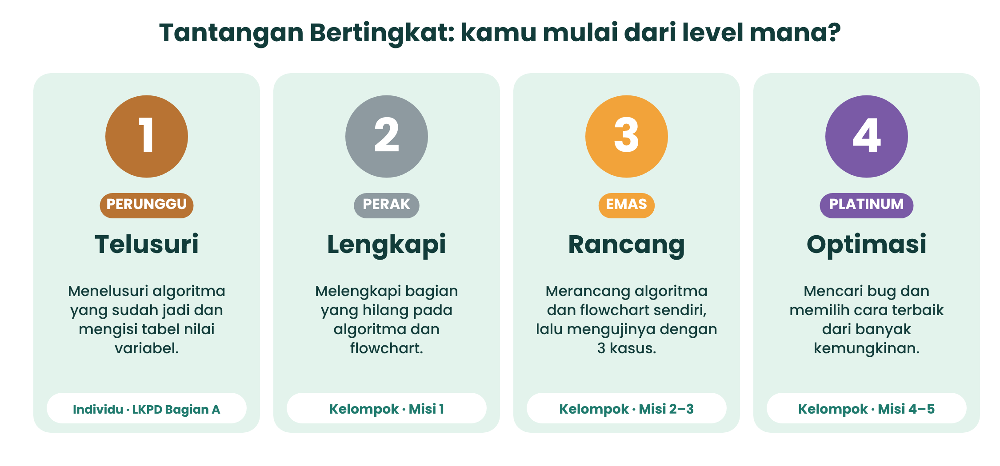
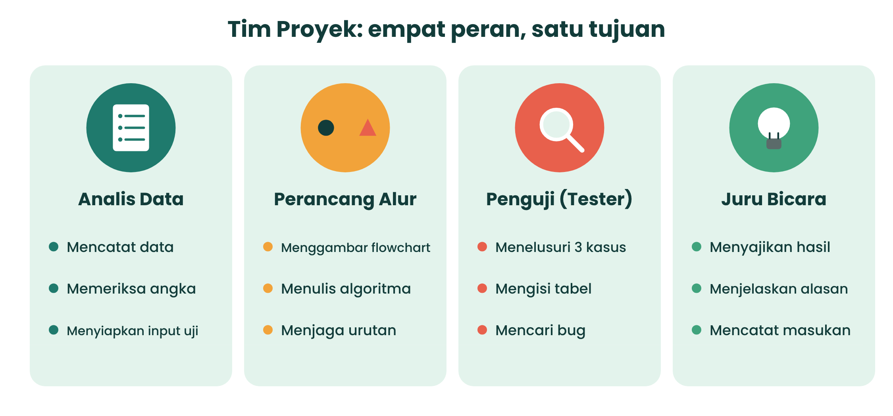
Jalur komputer (opsional): blok Scratch
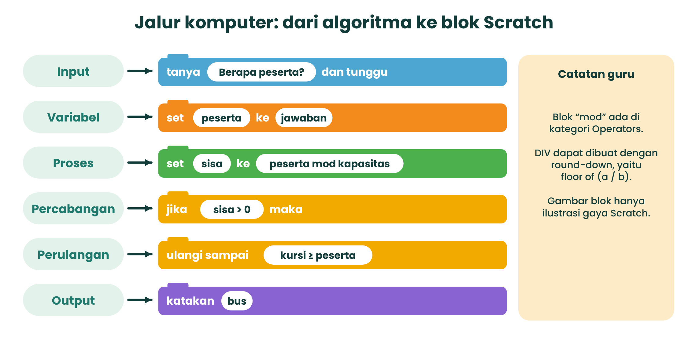
Input = ask and wait, variabel = set, sisa = mod, percabangan = if then, perulangan = repeat until, keluaran = say.
Flowchart lengkap Kalkulator Iuran (lihat setelah mencoba sendiri!)
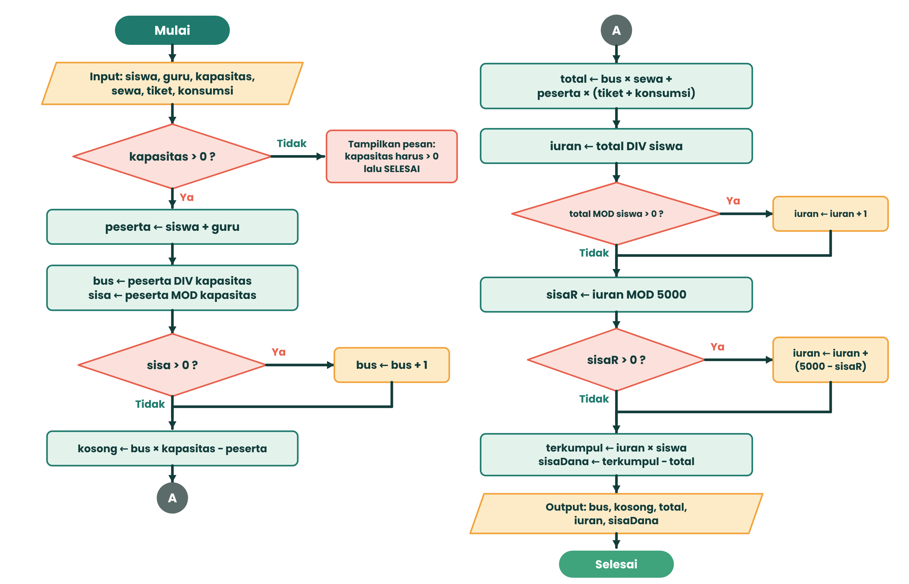
12Cek Pemahamanmu
Telusuri dulu di kertas, baru pilih jawabannya.
13Rangkuman Singkat
- Variabel = kotak bernama; ← berarti “diisi dengan”.
- DIV = hasil bagi bulat, MOD = sisa. Pembulatan ke atas: DIV, lalu JIKA sisa > 0 MAKA tambah 1.
- Percabangan memilih jalan; perulangan mengulang selama syarat benar.
- Flowchart menggambar algoritma; tabel penelusuran menjalankannya dengan pensil.
- Uji dengan banyak kasus (baku, batas, terlarang) supaya bug ketahuan.
Kamus Mini
| Istilah | Artinya |
|---|---|
| Algoritma | Urutan langkah yang jelas untuk menyelesaikan masalah |
| Variabel | Kotak bernama yang menyimpan nilai |
| Bug | Kesalahan dalam algoritma |
| Kasus uji | Data contoh untuk menguji algoritma |
| Tabel penelusuran | Tabel nilai variabel pada tiap langkah |
Tugas mandiri
Temukan satu masalah di rumah atau sekolah (misalnya menyusun kursi dalam baris berisi 8 kursi). Tulis algoritma dan tabel penelusurannya untuk 3 kasus: biasa, pas, dan sisa 1. Pertemuan berikutnya (TP 10): menulis instruksi dalam format pseudocode.